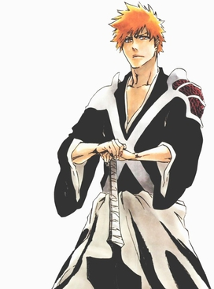
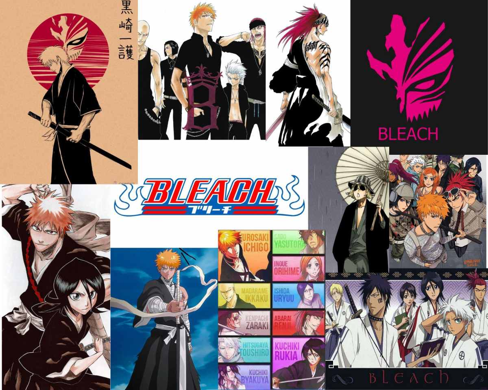
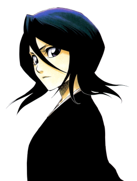

ジャンル: アクション・バトル・ファンタジー 有名な理由: 死神という独自の世界観とスタイリッシュな演出
『BLEACH』は、死神の力を得た高校生・黒崎一護の戦いを描いた バトルアニメです。尸魂界編を中心に、個性豊かなキャラクター、 斬魄刀の能力、そして独特な台詞回しが多くのファンを魅了しました。 クールで重厚な雰囲気は、他の少年漫画とは一線を画しています。
総合評価: ⭐ 8.0 / 10 ― 世界観と美学が光る名作